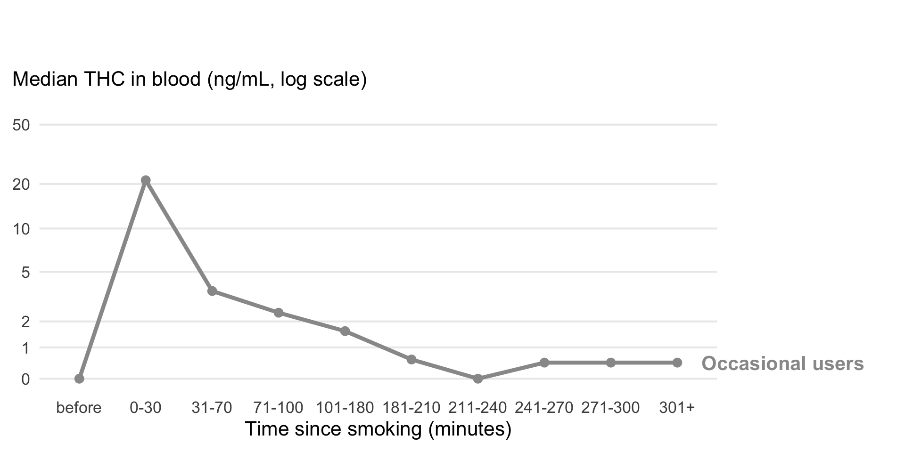
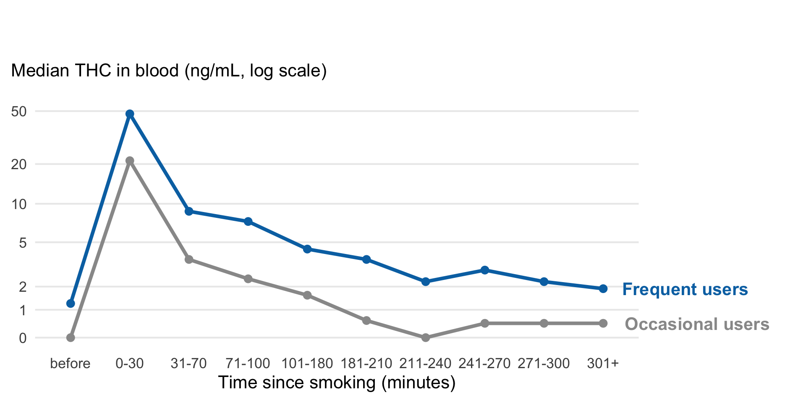
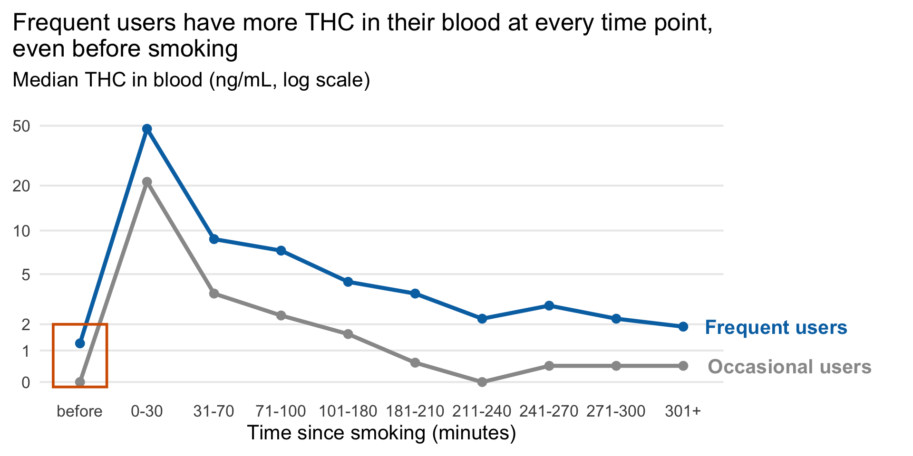

16-oral-communication
Effective Oral Communication
Q&A
Q: What did you work on while in Austin at snake_case?
A: We worked on extending ggplot2 into the python world. The package plotnine) already exists and implements the grammar of graphics in python. But, many of the helpful extensions that exist for ggplot2 do not yet exist for python. So, we built them and you can see them here: https://github.com/snake-case-ggtext. To support this (also in that org), we also built an app that will compare the R and python output and iteratively improve the code until they match (plotparity). And I went on a side-quest to build a package that could act as a plot linter to give students feedback on how the viz they generated fall short of best practices (plotnine-linter)
Q: When talking about parts of our final project, how do we account for an area’s income for college preparedness?
A: Depends on what you’re doing, but typically this would be included as a covariate (predictor in the model), to adjust findings for effect of income.
Q:I’m still a little confused about what cross-validation is and how it works.
A: Most simply cross-validation allows us to take our training data and split it into folds. Folds are a portion ofthe data. If you have 4 folds, 25% of the training data is in each fold. Then, you repeat the process of training the data on all but one of the folds and then seeing how it performs on the fold that was held out. Each time you repeat the process, a different fold is held out…and you calculate model performance on the held-out fold. Then you average across the folds for a performance metric. If you’re trying out two different models, you would then compare performance across models, selecting the better-performing model.
Course Announcements
Due Dates (rest of quarter):
- 👯 Rough Draft - Final Project - due this Wed (11/25)
- 👯 Peer review - due Mon (11/30) [we’ll talk about this in class Wed.]
- 📊 Fri 12/11 (Finals week) - final project due (report + general communication + feedback)
- 🔘 Lecture Participation survey “due” after class
Notes:
- Wed this week is for in-class project work
- 🎥 Next week is final project presentations - sign up for a slot by adding your team name
- No section Thursday or class Friday (Happy Thanksgiving!)
Final Project: Presentations
- 5 min presentation - everyone should be present and speak
- Audience: COGS 137 students
- 5-10 min for questions
- everyone will answer questions
- we’ll choose who answers which
- Presentation slots: 9 in class; 6 just after class on Fri (last day of class)
Final Project (Fri of finals week)
- qmd/HTML Report
- Audience: COGS 137 students
- unfamiliar topic; needs introduction
- should walk through analysis and explain/interpret results
- NO Extension necessary .
- Audience: COGS 137 students
- General Communication
- For a general audience; like cs01/cs02
Agenda
- What carries over from written & visual communication
- Plan your talk
- Design your slides
- Present a figure
- Deliver it (as a group)
- Answer questions
Where we’ve been
In written communication we covered:
- Consider your audience: you do the work so they don’t have to
- Informative titles: state the take-home, not the topic
- The glamour of graphics: left-aligned titles, no head-tilting, remove/lighten, direct labels > legends, color with a purpose
- Tables are communication, too
. . .
All of that still applies. Today: what changes when your audience is listening instead of reading?
Reading vs. Listening
Reports are for reading; presentations are for listening
| Report 📄 | Presentation 🎤 | |
|---|---|---|
| Who controls the pace? | the reader | you |
| Missed something? | re-read it | it’s gone |
| Where does the explanation live? | in the text | in your voice |
| How much on one visualization? | more (they have time) | less; build it up |
| How much detail? | all the necessary details | only what supports the take-home |
. . .
You’ve seen your figures 100 times. Your audience is seeing them for the first time.
Brainstorm
🧠 What’s the best (or worst) presentation advice you’ve ever been given?
Plan Your Talk
Start with your take-home
Before you open Google Slides/PowerPoint/Quarto:
. . .
- If your audience remembers one thing, what should it be?
- Write it as one sentence. Every slide should support it.
. . .
- Group check: if each of you wrote that sentence separately, would you all write the same one? If not, sort that out first.
Nussbaumer Knaflic calls this the “Big Idea” in Storytelling with Data.
Tell a story
- Stories have a beginning, a middle, and an end
- Stories do not include every detail of what you tried
. . .
- Tell them what you’re going to tell them. Tell them. Tell them what you told them.
- Repetition is OK! Listeners can’t flip back a page.
5 minutes goes fast
A rough budget:
| Part | Time | Slides |
|---|---|---|
| Title + hook: your question & why it matters | ~45 sec | 1-2 |
| Data: where it’s from, what’s measured | ~45 sec | 1 |
| Approach: what you did (briefly!) | ~45 sec | 1 |
| Results: your 1-2 key findings | ~2 min | 2 |
| Conclusion: take-home + a limitation | ~45 sec | 1 |
. . .
- Roughly a slide a minute. If you have more than ~8 slides, you will rush.
- Plan for 4.5 minutes. Live talks (often) run longer than practice runs.
- This means: practice before out loud. multiple times. time yourselves.
Know your audience: COGS 137 students
They already know
- R & the tidyverse
- regression, train/test splits, cross-validation
- what a boxplot is
➡ does not need a review/explanation
They don’t know
- your topic
- why your question matters
- your data & variables
➡ spend your time here
What to leave out
- Your full EDA
- Every model you tried
- Code on slides
- Scrolling through your
.qmd/HTML ❌
. . .
Those details belong in your report (or in backup slides after your conclusion).
Design Your Slides
Slide titles = your point
Same rule as figure titles: the title is the main point you want people to leave with.
. . .
Avoid: “Introduction”
Better: “Cannabis use is on the rise”
. . .
Avoid: “Results”
Better: “THC concentration >5ng/mL suggests recent use”
. . .
Headline test: read only your slide titles in order. Do they tell your story?
Your title slide
- Title: short and informative
- Occasion: COGS 137 Final Project
- Date
- Names: everyone in your group (and your team name)
One idea per slide
- Limit words. If you’re tempted to read it aloud, there’s too much.
- Space your bullets out; 3-5 max
- Reveal bullets one at a time (like this!)
- so the audience listens to you instead of reading ahead
- Quarto:
. . .orincremental; Google Slides/PowerPoint: Animation ➡ Appear, on click
- Use animation to build your story, not to distract (no spinning, bouncing, flying)
Present for the back of the room
- Large text: ~24 pt+ for body text. Figure text too:
theme_minimal(base_size = 18) - Easy-to-read fonts: sans-serif (Helvetica, Calibri, Verdana, Source Sans, Fira Sans); not decorative (Jokerman, Snell Roundhand)
- High contrast: dark text on light background. On a dark background, use white text, not gray.
- Colors that project: projectors wash out light colors (yellow on white disappears). Use the colorblind-friendly palette we’ve been using.
- Consistency: one theme, one set of fonts and colors…across all group members’ slides
- Alignment: misaligned stuff is distracting
The little things
- Slide numbers: so someone can ask “Can you go back to slide 4?”
- Citations: cite sources on the slide where you use them, and include a reference slide at the end…but don’t present it
- Backup slides: put details you might be asked about after your conclusion
- End on your take-home, not a “Questions?” slide. It stays up during Q&A, so make it the slide you want people looking at.
Present a Figure
How to present a figure
- Axes: What’s on the x and y axis? (units? scale?)
- Legend: What do the colors/shapes mean?
- What do you see? Point to it. Highlight it.
- Stats: test or model results, if you have them
- Take-home: the main point (which should match your title)
. . .
It feels slow. It isn’t. This is how you get your audience to see what you see.
Build it step by step
- Start with empty axes
- Add one group at a time
- Highlight what matters
- End on the take-home
. . .
The audience looks where you’re pointing, instead of at the whole figure at once.
. . .
Let’s try it with CS01 data: THC in whole blood after smoking, comparing frequent and occasional users (placebo group excluded).
Step 1: Start with the axes
🗣️“Time since smoking is on the the x-axis, from before smoking out to five hours. y-axis is log scale THC measurements from blood.”
Step 2: One group at a time

🗣️ “Here are occasional users. THC spikes in the first 30 minutes, then drops fast. After about three hours, there’s very little left.”
Step 3: Add the comparison

🗣️ “Frequent users follow the same pattern, but their line is above occasional users at every single time point.”
Step 4: Highlight & state the take-home

🗣️ “And look before anyone smoked: frequent users already have THC in their blood (median 1.25 ng/mL); occasional users have none (median 0 ng/mL).”
Making a build in R
Same plot code each time, adding one layer per step:
base_plot <- ggplot(thc_time, aes(x = timepoint, y = median_thc, color = group)) +
coord_cartesian(ylim = c(0, 60)) + # fix the axes so they don't jump
labs(title = "\n") # reserve space for the title you add at the end
step1 <- base_plot + geom_blank() # just the axes
step2 <- base_plot + geom_line(data = filter(thc_time, group == "Occasional user"))
# ...and so on- One figure per slide, same size and position: clicking to the next slide looks like animation
- Works the same way with images in Google Slides/PowerPoint
Full code for the figures above:
cs01 <- read_csv("data/cs01_combined.csv")
window_order <- c("pre-smoking", "0-30 min", "31-70 min", "71-100 min",
"101-180 min", "181-210 min", "211-240 min",
"241-270 min", "271-300 min", "301+ min")
# median whole-blood THC per time window, THC groups only
thc_time <- cs01 |>
filter(fluid_type == "WB", !is.na(timepoint), treatment != "Placebo") |>
mutate(timepoint = fct_relevel(timepoint, window_order)) |>
group_by(group, timepoint) |>
summarize(median_thc = median(thc, na.rm = TRUE), .groups = "drop")
group_colors <- c("Frequent user" = "#0072B2", "Occasional user" = "#999999")
# the parts that stay the same in every step, so the axes don't jump
base_plot <- ggplot(thc_time, aes(x = timepoint, y = median_thc,
color = group, group = group)) +
scale_y_continuous(transform = "pseudo_log",
breaks = c(0, 1, 2, 5, 10, 20, 50)) +
scale_x_discrete(labels = function(x) str_replace_all(x, c(" min" = "", "pre-smoking" = "before"))) +
scale_color_manual(values = group_colors) +
coord_cartesian(ylim = c(0, 60), clip = "off") +
labs(title = "\n", # placeholder: keeps the plot the same size across steps
subtitle = "Median THC in blood (ng/mL, log scale)",
x = "Time since smoking (minutes)", y = NULL) +
theme_minimal(base_size = 16) +
theme(legend.position = "none",
panel.grid.minor = element_blank(),
panel.grid.major.x = element_blank(),
plot.title.position = "plot",
plot.margin = margin(10, 150, 10, 10))
# add one group's line, points, and direct label
add_group <- function(p, which) {
d <- filter(thc_time, group == which)
p + geom_line(data = d, linewidth = 1.5) +
geom_point(data = d, size = 3) +
geom_text(data = filter(d, timepoint == "301+ min"),
aes(label = str_replace(group, " user", " users")),
hjust = -0.15, size = 5.5, fontface = "bold")
}
step1 <- base_plot + geom_blank()
step2 <- add_group(base_plot, "Occasional user")
step3 <- add_group(step2, "Frequent user")
step4 <- step3 +
annotate("rect", xmin = 0.6, xmax = 1.4, ymin = -0.15, ymax = 2,
fill = NA, color = "#D55E00", linewidth = 1) +
labs(title = "Frequent users have more THC in their blood at every time point,\neven before smoking")
# numbers for the text
pre <- thc_time |> filter(timepoint == "pre-smoking")
pre_freq <- pre$median_thc[pre$group == "Frequent user"]
pre_occ <- pre$median_thc[pre$group == "Occasional user"]Your turn
🧠 Pick one figure from your final project rough draft. Walk your neighbor through it using the 5 steps. (~60 seconds)
- Axes
- Legend
- What do you see?
- Stats?
- Take-home
. . .
Listener: Could you follow it? Did you know what the axes were before you were told the point? Then swap.
Delivery
Presentations are for listening
- Speak to the back of the room
- Face the audience when possible (not the screen)
- Pause. Silence is OK. Pause after your key points.
- Point to what you’re talking about
- Be yourself.
Practice (out loud!)
- Practicing:
- improves your explanations
- calms your nerves
- makes sure you’re within time
- Reading your slides silently ≠ practicing
- Do at least one full, timed run-through as a group
- Record yourself once. You’ll catch filler words and speed.
Answering Questions
Q&A: 5-10 minutes
- Everyone in your group answers questions
- We choose who answers which
. . .
So everyone needs to understand the whole project, not just their part:
- the question & why it matters
- the data
- the main analysis choices (and why)
- the main result + a limitation
Answering well
- Listen to the whole question. Pause before answering.
- Repeat or rephrase it: helps the audience hear it, confirms you understood, buys you a moment
- Answer directly first, then explain briefly
- Use your backup slides
- “I don’t know” is OK. Follow it with what you do know, or how you’d find out. Don’t make things up.
- If someone points out a real limitation: acknowledge it, and say how it affects your conclusion
Prepare for questions
🧠 As a group: write down 5 questions you’d ask if you were in the audience.
. . .
Common ones:
- Why this dataset? This outcome? This model?
- How did you handle missing data?
- How confident are you in this result?
- What surprised you?
- What would you do with more time/data?
. . .
Then practice answering them, rotating who answers.
Checklists
Talk
- Clear one-sentence take-home
- Tells a story
- Right level of detail for the audience
- Orients audience to every figure
- Practiced out loud, as a group
- Within time
- Handoffs planned
Slides
- Informative title slide
- Titles state the point
- One idea per slide
- Readable fonts & text size
- Consistent theme, fonts, colors
- Colors project well
- Slide numbers
- References & backup slides
Figures
- Informative titles
- Appropriate plot type
- Less is more
- Clear mappings (direct labels)
- Consistent colors
- Text large enough
- Built up step by step
- Take-home clear
Resources & Credit
- Quirine van Engen (former COGS 137 TA): Mastering your slides
- Cole Nussbaumer Knaflic: Storytelling with Data
- Will Chase: The Glamour of Graphics (rstudio::conf2020)
- Matthew Butterick: Practical Typography
Recap
- Presentations are for listening: you do the explaining, so put less on each slide
- Plan from your one-sentence take-home; 5 minutes ≈ 5-7 slides
- Slide titles state your point
- Present every figure: axes, legend, what you see, stats, take-home…and build it step by step
- Practice out loud, as a group, and plan your handoffs
- Everyone should be able to answer questions about any part of the project